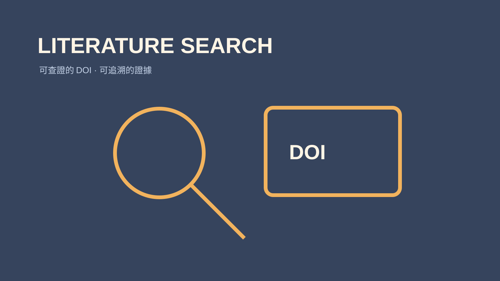

技能包 · 學術工具 · 學術研究
可查證文獻搜尋
2026.08 · 個人專案

FIG. 21 — 產品主畫面
關於這個作品
可查證文獻搜尋透過 Crossref、PubMed、OpenAlex 等來源蒐集研究，逐篇確認書目與 DOI，並依研究問題整理證據強度、核心論點與 APA 7 格式。它把「找到資料」提升為可追溯的研究基礎。
作品亮點
串接 Crossref、PubMed、OpenAlex 等原始資料庫
逐篇驗證 DOI、書目與來源可追溯性
依研究問題整理摘要、論點與證據層級
以 APA 7 與 DOI 交付可直接使用的引用